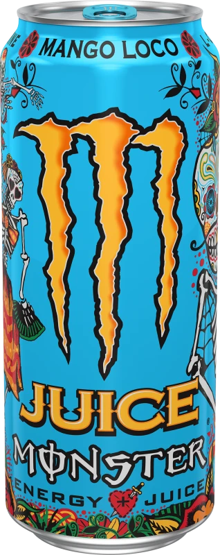

Mango Loco
Mango
Loco... it'll make
you crazy for mango (that's why we added "loco" to the name).
Is it the impecable flavor, absurd amounts of
caffeine, or even more absurd
amounts of sugar that'll make you go crazy?
Hard to say
It's for sure FDA approved though
Pretty please don't fact check us
Total Caffeine:
76 mg Per Serving 152 mg Per Can
Consume
Responsibly
Not Recommended for children, people sensitive to caffeine, pregnant women or women who are
nursing.
Monster is not liable for nor can confirm or deny the factualness of any claims made in this
webpage.